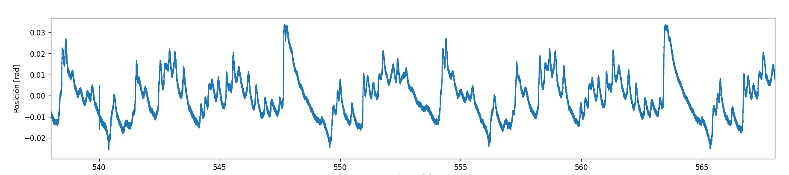
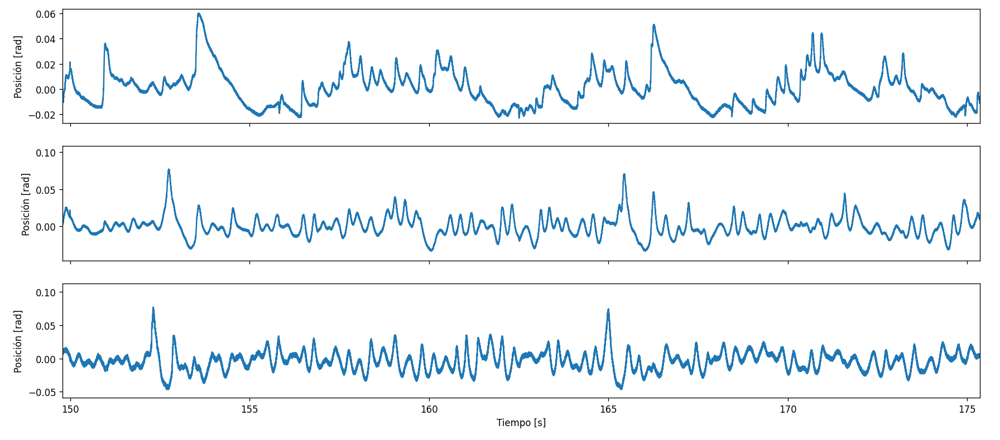
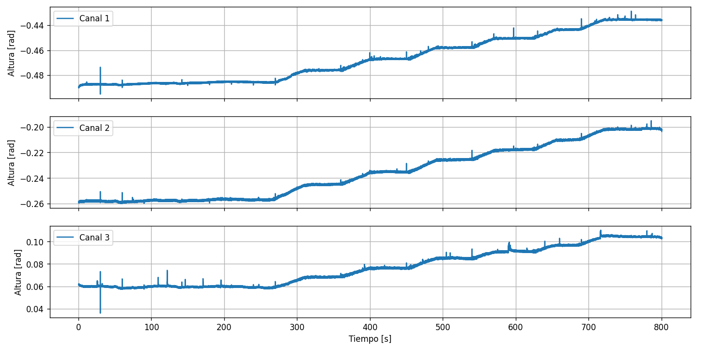
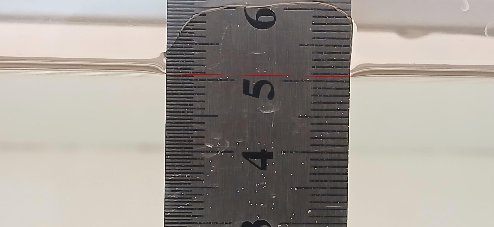
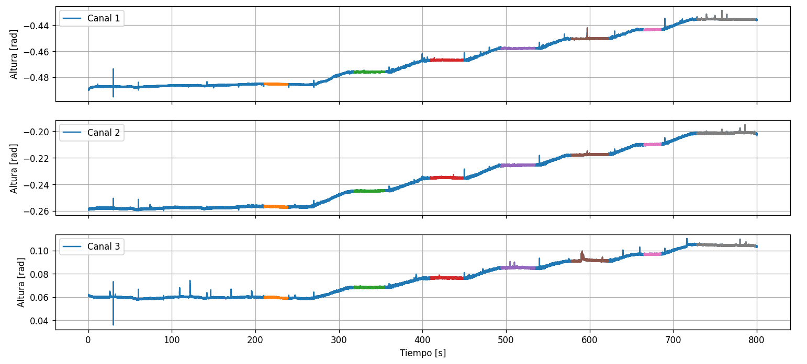
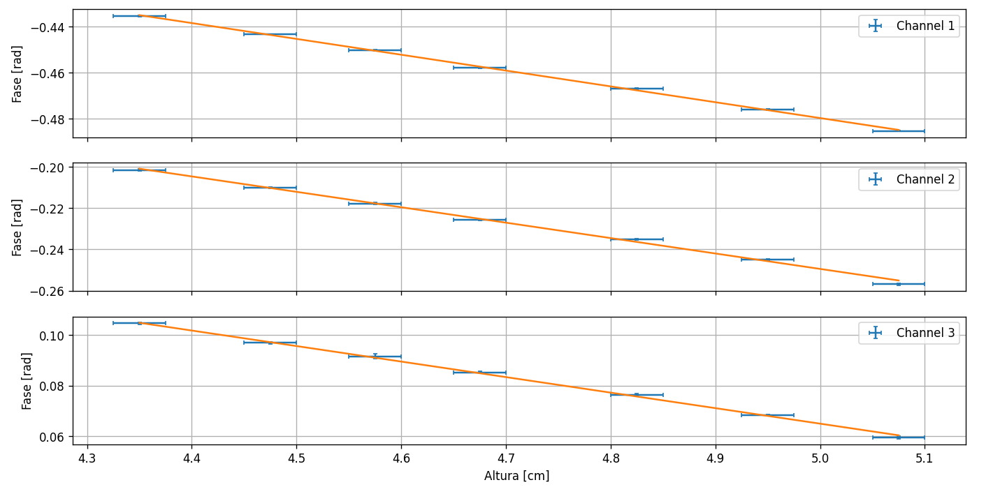
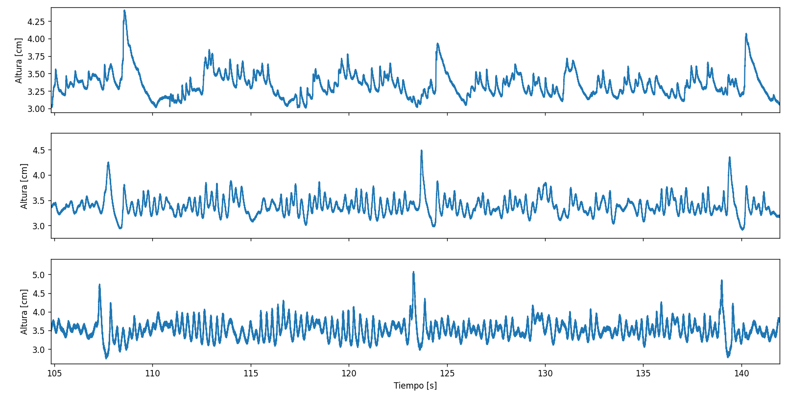
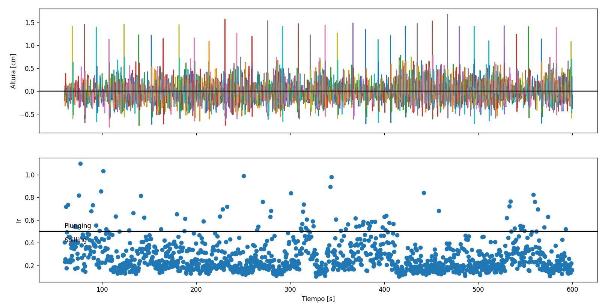
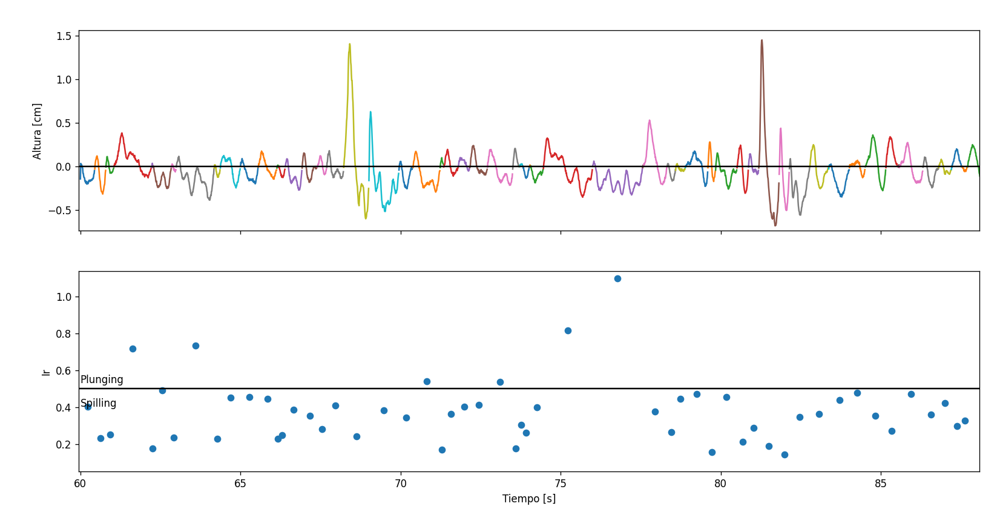
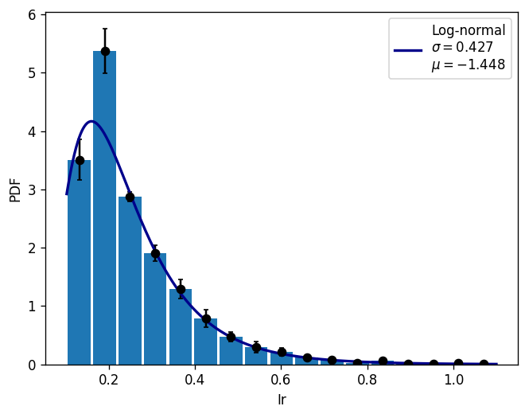

Journal Week 26
Table of Contents
Referencias
2026-06-23
[09:07]
Estoy revisando qué pudo haber cambiado entre la medición con un sensor y con los tres sensores en simultáneo. En principio una cosa que cambió seguro es que para el código del lock-in con los tres sesnores tenía la versión corregida de la función de trim() mientras que la de un solo sensor tenía la anterior que el factor de renormalixación le faltaba elevar al cuadrado.
[09:12]
Ya volví a correr el lock-in, ahora con la versión de trim() corregida, pero al ser solo un factor multiplicativo el espectro sigue dando como daba.
[09:14]
Así es la serie temporal para el sensor único:

[09:18]
Y acá están las series temporales para los tres sensores midiendo en simultáneo:

[09:47]
Voy a buscar los parámetros de calibración de los tres sensores. Tengo todo montado como la semana pasada. Voy a llenar la cuba un poco más de lo que estaba llena para que todos queden bien sumergidos y la voy a ir vaciando. Voy a tomar una sola medición larga por el transitorio.
[10:00]
Los valores de los plateaus deberían ser alturas de (medidas al lado del sensor de la paleta, en el medio del mensico): 5.05 cm, 5.00 cm.
[10:02]
¿Podría tener que ver la interferencia de los sensores entre sí con el suavizado del espectro al medir con los tres en simultáneo? Aunque cunado medí con uno solo estaban igualmente los tres conectados.
[10:11]
Agarré la regla al acrílico con una clamp para ser más consistente con las mediciones. Los valores de altura son: 5.05 cm.
[10:26]
Ahora para poder medir siempre en la misma línea del menisco y desde la misma perspectiva puse el celular en un trípode apuntando a la regla. Esto con agua de la canilla.
[10:40]
Ya está, tomé 7 puntos en total, cada aproximadamente 1 mm de altura.
[10:44]
La frecuencia del generador de funciones fue la misma que la de la vez pasada, de 59.940 kHz, y la amplitud también, de 10 Vpp.
[11:00]
Las series temporales de los tres sensores con los siete plateaus cada una son:

Y el criterio para el menisco es el siguiente:

Una cosa importante es que acá usé el lockin con t0 = -0.5 en vez de uno distinto por canal, pero usé eso tanto en la calibración como en el análisis de las mediciones de la semana pasada así que debería ser consistente. En cualquier caso eso solo modifica un valor medio sumando.
[11:07]
Con el criterio anterior las alturas fueron (en cm y con 0.025 cm de incerteza): 5.075, 4.950, 4.825, 4.675, 4.575, 4.475, 4.350.
[11:17]
Los intervalos elegidos para calcular los promedios de fase en cada altura son los siguientes:

[11:30]
Los ajustes lineales dan:

Y los parámetros de los ajustes son:
| Channel | a (rad/cm) | b (rad) | \(R²\) | \(\chi_\nu²\) |
|---|---|---|---|---|
| 1 | \((-0.0689 \pm 0.0004)\) | \((-0.135 \pm 0.002)\) | 0.99926 | 1.40017 |
| 2 | \((-0.0746 \pm 0.0006)\) | \((0.124 \pm 0.003)\) | 0.99743 | 1.42071 |
| 3 | \((-0.0613 \pm 0.0007)\) | \((0.371 \pm 0.003)\) | 0.99875 | 1.43573 |
En general dan super bien.
[11:55]
Ya calibradas las series temporales de la semana pasada con esos parámetros queda lo siguiente:

Esto debería ser altura absoluta, respecto del fondo de la cuba. Aunque pareciera estar centrada un poco más abajo de lo que era la altura en ese momento.
[15:43]
El número de Iribarren está definido como: \(\text{Ir} = \tan(\alpha) / \sqrt{S_0}\). Con \(S_0\) el wave steepness en el incio de la rampa. En este caso da para el canal 3 un valor medio de \(Ir \approx 0.199967\) calculandolo con el \(S_0\) medio directamente bajo la aproximación de gravedad en aguas profundas. Esto s etraduciría a un rompimiento de tipo spilling.
[15:49]
Calculando el Ir para cada onda individual y calculando su valor medio y error estándar obtenemos: Ir = \((0.2601 \pm 0.0035)\).
2026-06-24
[09:59]
Estamos diseñando la nueva rampa que va a ir en el centro del canal con una relación de aspecto de 1:20 (más empinada que la actual de ~1:28) con las paredes de plexiglas en los costados.
[14:29]
Para el sensor son por cada ensamble (con esapciador):
- 7 tuercas M4.
- 5 tornillos M4x10.
- 4 tornillos M4x16.
- 2 slag (ojal) para enroscar los alambres.
Para el espaciador solamente son:
- 2 tuercas M4
- 2 tornillos M4x16.
Necesitaríamos unos 5 de sensores y unos 10 de solo esapciadores.
[14:35]
Volviendo al análisis del número de Iribarren tenemos para cada onda individual (incluyendo las que son muy largas temporalmente que claramente son varias):

Y haciendo algo de zoom:

Y las PDFs promedio (calculadas en ventanas de 300 ondas individuales con overlap de 150) y error estándar ajustan bastante bien por una log-normal.

Esto sale del paper de Tayfun (Tayfun 2006), ya que al ser log-normal la distribución de wave steepness, este número que va como \(s^{-1/2}\) debería seguir ese mismo tipo de distribución. Faltaría adimensionalizar de alguna forma esa variable.
En general todo es compatible con el tipo de breaker spilling que pareciera ser el que se identifica al hacer el experimento.
Tal vez habría que reconstruir este histograma usando solo las ondas individuales que pertenecen al forzado fuerte (la patada cada ~15 s) que son las que se identifican como rompientes.
[15:33]
Para conectar el plexiglás a la caja del fondo una idea es usar tornillos pasantes largos que agarren también la rampa, impresos en 3D para evitar la oxidación de los tornillos e insertes de hierro. Un modelo posible disponible en: aquí. á